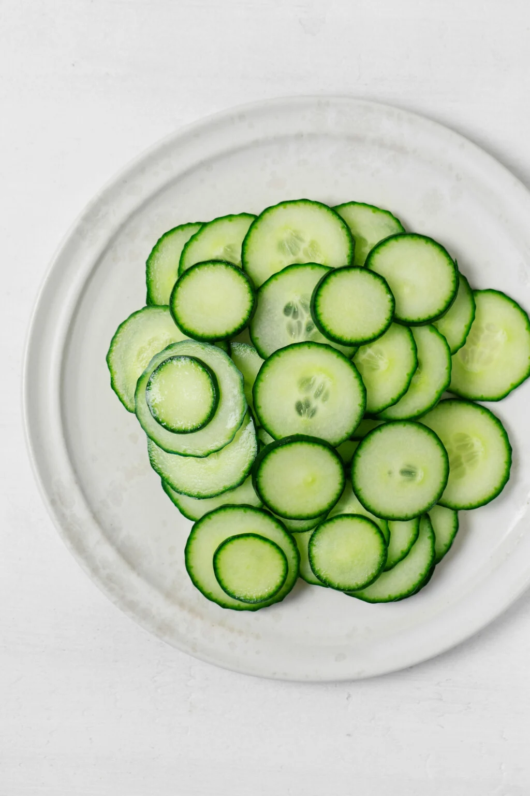

Acerca del Pepino
El Pepino Francamente Desaliñado no es un vegetal cualquiera: es una maravilla de la naturaleza que desafía lo convencional. Con su forma peculiar y sabor sorprendente, ha cautivado a los amantes de la gastronomía en todo el mundo.

Galería


Características Únicas
Experimenta la textura crujiente y el sabor distintivo que desafía lo ordinario. Descubre la fascinante historia detrás de este extraordinario vegetal.
Juego: Clic del Pepino
¡Haz clic en el pepino en movimiento tantas veces como puedas antes de que se acabe el tiempo!
Puntuación: 0
Tiempo Restante: 15 segundos